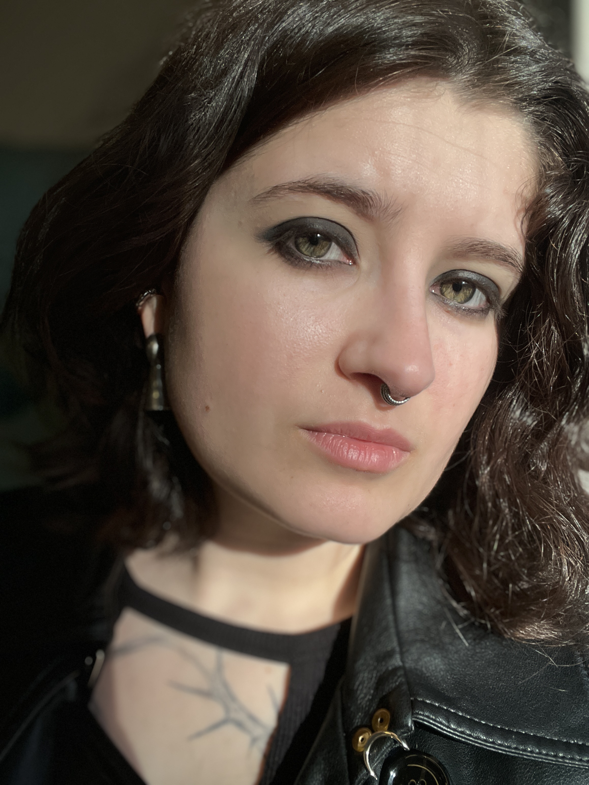
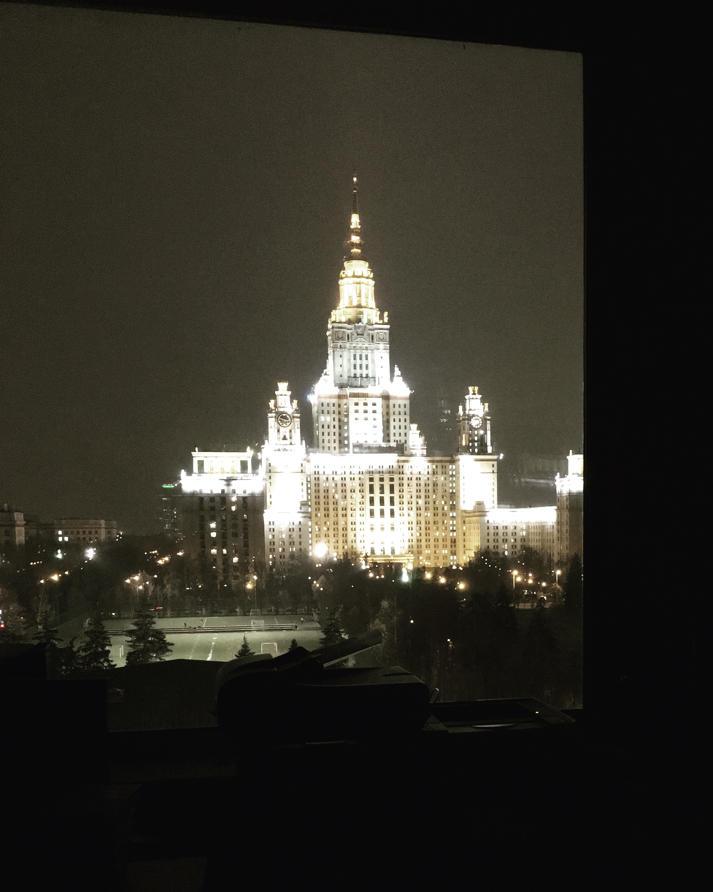
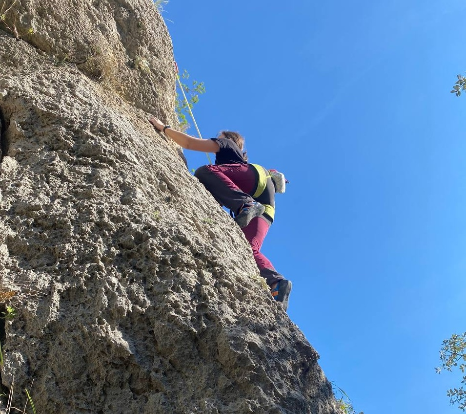
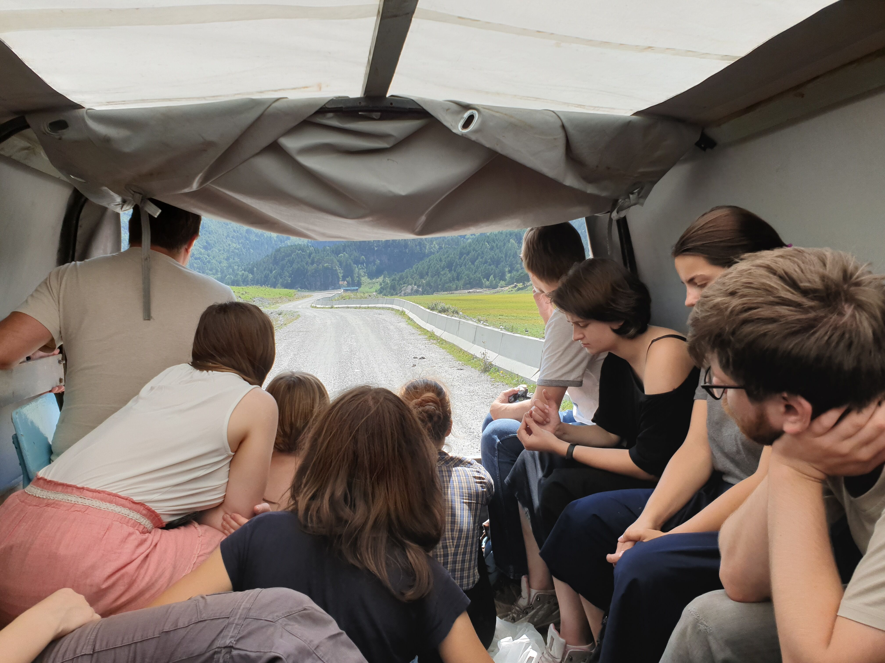
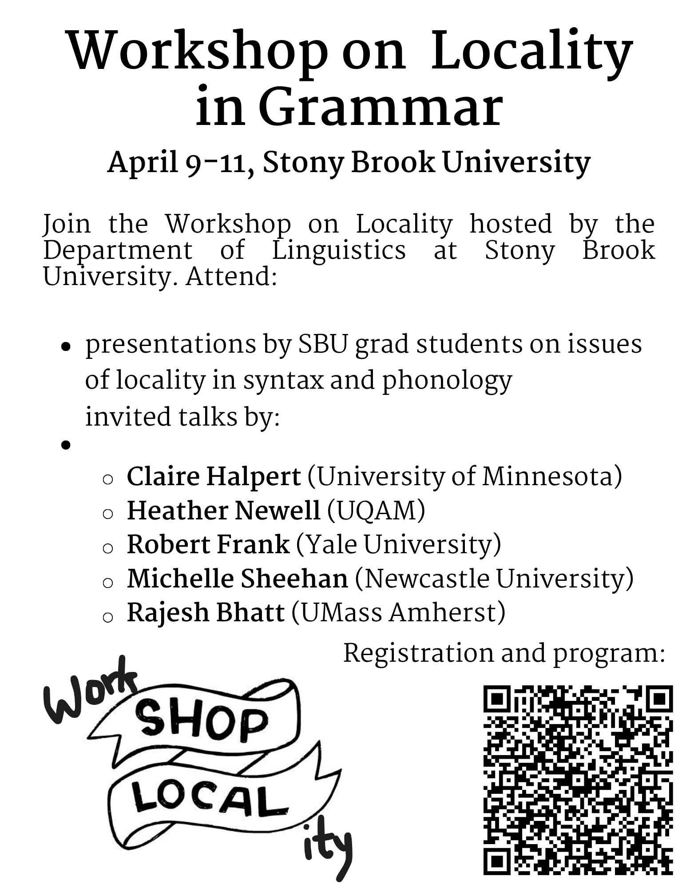

About


I am a PhD candidate at the Department of Linguistics at Stony Brook University. I am advised by John F. Bailyn. My research questions always start with theoretical syntax but I am very interested in areas and methodoligies I encounter along the way.
I did my undergraduate and masters studies at the Department of Linguistics at Lomonosov Moscow State University, where linguists are “brought up” doing fieldwork. There I was advised by Ekaterina Lyutikova and Sergei Tatevosov. That is how I got into working on the syntax of underdocumented languages. I have also been working on island effects in Russian, which is what lead me into experimental syntax. Lately, I have also been interested in linking processing effects to syntactic structures through parsing theory.

To do all that and stay sane, I also enjoy rock-climbing, pole sport, dancing, cooking unseen amounts of food, singing to my guitar and video-calling my friends all over the world. Proud GSEU member.
Research experience
Fieldwork


I find fieldwork to be one of the most fulfilling methods of gathering linguistic data. I started doing fieldwork as a student at Lomonosov MSU, where many researchers work on documentation of indigenous (and endangered) languages of Russia. First, I was part of the Uralic fieldwork group lead by Svetlana Toldova, and worked on Hill Mari in 2016-2017. Then I joined another group, one of mountainous fieldwork enjoyers lead by Sergei Tatevosov, and worked on Buryat (a Mongolic language) in 2017-2018 and Balkar (a Turkic language) in 2019-2021. I have also done some fieldwork on Georgian in 2018. Currently, I have plans to start fieldwork on a new language. Stay tuned!

Experimental syntax

I started studying island effects in Russian experimentally in 2019 as part of the Moscow Experimental Syntax Group. I continue working on island effects in Russian using experimental methods during my time at Stony Brook University. My second QP was built around an experimental study of island effects using audio stimuli.
Locality project

Throughout Fall 2024-Spring 2025 I was a Research Assistant on the project called Syntactic Locality: an interface of typology, theory and computation, with Thomas McFadden as PI and Thomas Graf, Sandhya Sundaresan, and John F. Bailyn as co-PIs. This project was funded by an OVPR seed grant at Stony Brook University. This project yielded an initial version of two resources: 1) A representative typology of locality phenomena; 2) A curated survey of theoretical approaches to locality. A Workshop on Locality was held (co-organized by me) at Stony Brook.
Publications
Peer-reviewed
-
What Backward Negative Concord tells us about control(Submitted to NLLT)
-
Yes-no questions in BalkarProceedings of the Workshop on Turkic and Languages in Contact with Turkic, Vol. 7(1), 104-113. 2022
-
Wh-questions in BalkarProceedings of the Workshop on Turkic and Languages in Contact with Turkic (Vol. 5(1), 163-172. 2020
-
Nominalizations in Hill MariFinno-Ugric Languages and Linguistics. Vol. 8(1). 36–49. 2019
Conference proceedings (non peer-reviewed)
-
The extraction of direct objects out of indirect yes/no questions in RussianTypology of Morphosyntactic Parameters, Vol. 3(2), 11-28. 2020
-
Restrictor restrictions: what kind of restrictors do negative floating quantifiers in Russian require?Typology of Morphosyntactic Parameters. Vol. 2(2). 27–53. 2019
-
Buryat Question Particles and Where to Find ThemConference on Central Asian Languages and Linguistics. 95–104. 2018
Volume contributions
-
Častnyj vopros v Balkarskom Yazyke [Wh-questions in Balkar]Sergei Tatevosov, Petr Rossyaykin (eds.), Balkarskiye etjudy [Balkar sketches]. (in preparation)
-
Obščij vopros v Balkarskom Yazyke [Yes/no-questions in Balkar]Sergei Tatevosov, Petr Rossyaykin (eds.), Balkarskiye etjudy [Balkar sketches]. (in preparation)
-
Ostrovnye svojstva kosvennogo voprosa s li [Island effects in Russian li-questions]Ekaterina Lyutikova, Anastasia Gerasimova (eds.), Russkie ostrova v svete experimental’nyx dannyx [Russian Islands in light of experimental data]. Moscow. 2021
-
An emerging veridical complementizer to čto in RussianMetin Bağrıaçık, Anne Breitbarth, and Karen De Clercq (eds.), Mapping Linguistic Data. Essays in honour of Liliane Haegeman. WebFestschrift. Ghent: Ghent University. 2019
-
Licenzirovanije otricatel’nyx plavayuščix kvantorov v russkom jazyke [The licensing of negative floating quantifiers in Russian]V.N. Stepanov, L.V. Uxova (eds.), Russkaja Grammatika: aktivnye processy v jazyke i reči [Russian Grammar: active processes in language and speech]. Yaroslavl. 2019
Book reviews
-
Review of Gréte Dalmi, Jacek Witkoś & Piotr Cegłowski (eds.), Strict negative concord in Slavic and Finno-Ugric: Licensing, structure and interpretation (Berlin, Boston: De Gruyter Mouton, 2024)Journal of Linguistics, Vol. 61(2), 463-466. 2025
Manuscripts
-
Island effects in Russian indirect yes/no questions (in Russian)Master's thesis. Lomonosov Moscow State University. 2021.
-
The syntax of Negative Floating Quantifiers in Russian (in Russian)Bachelor’s thesis. Lomonosov Moscow State University. 2019.
Selected presentations
-
A minimalist parsing account of object preference in Korean Floating QuantifiersSYNC 2025, CUNY Graduate center. December 6, 2025
-
Backward Negative Concord in RussianGLOW 47: Generative Linguistics in the Old World, Goethe University Frankfurt. March 24–28, 2025
-
Backward Negative Concord in Control StructuresFASL 33: Formal Approaches to Slavic Linguistics, Dalhousie University. May 16–19, 2024
-
MI the almighty: yes-no questions in BalkarTU+7: Workshop on Turkic Languages and Languages in Contact with Turkic, University of Connecticut. February 18-19, 2022
-
Island effects in indirect li-questions (in Russian)Typology of Morphosyntactic Parameters 10, Institute of Linguistics, Russian Academy of Sciences. October 7–9, 2020
-
Wh-questions in Balkar: an argument in favor of the choice function approach (poster)TU+5: Workshop on Turkic and languages in Contact with Turkic, University of Delaware. February 8–9, 2020
-
Negative floating quantifiers: restrictor restrictions (in Russian)Typology of Morphosyntactic Parameters 9, Institute of Linguistics, Russian Academy of Sciences. October 16–18, 2019
-
-er nominals in Georgian (poster)TABU Dag, University of Groningen. June 14-15, 2018
-
Deadjectival Nominals in GeorgianCULC 12: Cornell Undergraduate Linguistics Colloquium. April 28-29, 2018
-
Buryat Question Particles and Where To Find ThemConCALL: Conference on Central Asian Languages and Linguistics, Indiana University Bloomington. March 2-4, 2018
-
Nominalizations in Hill MariSOUL 2017: Conference on the Syntax Of Uralic Languages, Research Institute for Linguistics, Hungarian Academy of Sciences. June 27-28, 2017
Teaching
University level
LIN 311: Syntax, Teaching assistant; Spring 2026
LIN 200: Language in the United States, Primary instructor (with Pardis Derakhshandeh and Daniel Greeson); Winter 2026
LIN 431: The structure of an uncommonly taught language (field methods), Sorani Kurdish, Teaching Assistant; Fall 2025
LIN 431: The structure of an uncommonly taught language (field methods), Malayalam, Teaching Assistant; Fall 2023
LIN 101: Human language, Teaching Assistant; Spring 2023
Other experience
English as a Second Language teacher (middle & high school). Novaya Shkola, Moscow, Russia, 2020-2022
Service
SBU Department of Linguistics GSEU mobilizer (2025-present)
Reviewing (conferences):
- SYNC
- TU+7 (Seventh Workshop on Turkic and Languages in Contact with Turkic)
SBU linguistics Colloquium Organizer (2024-2025)
SBU GSO Senator for Department of Linguistics (2024)
Contact and CV
Email: anastasiia.voznesenskaia@stonybrook.edu
You can also find me on Academia.edu.
Find my full CV here.